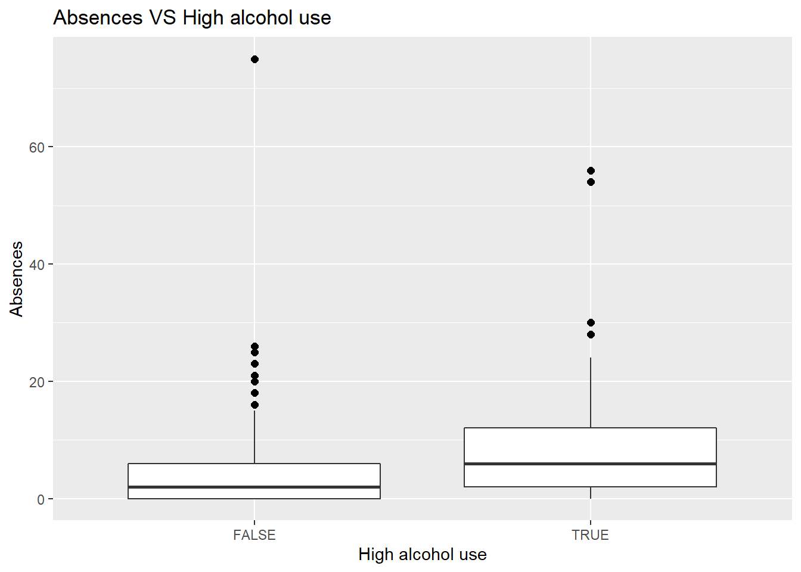
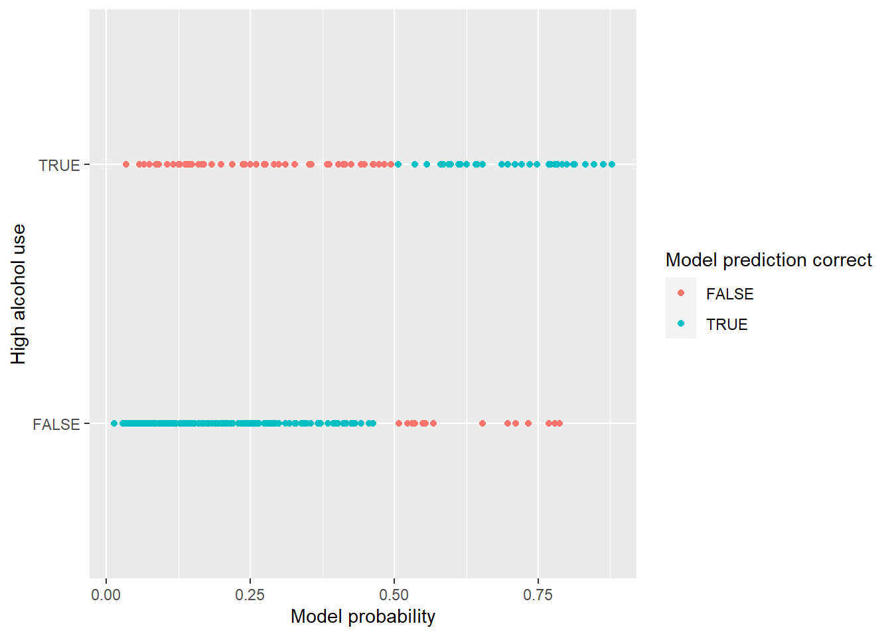
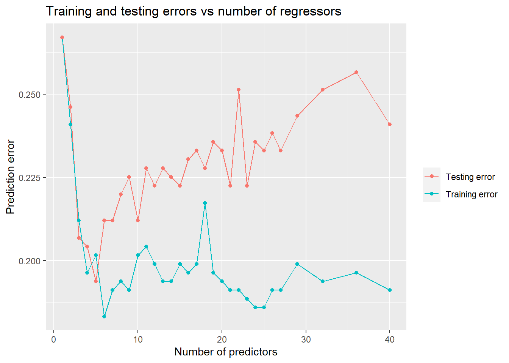

The data set used this exercise has been previously parsed from this file using an R script available here.
The original purpose of the study was to find factors associated with the students’ school performance. The parsed data consists of students in two Portugese schools. For the purposes of the study the background and alcohol consumption of the students was recorded through questionnaires. The students’ performance in mathematics and Portugese language was collected from school reports. The scores for either subject were combined in the above data handling script. A more exhaustive metadata is available here.
For an explanation of the individual variables, please, refer to the following:
| Variable name | Explanation |
|---|---|
| school | Student’s school (either GP or MS) |
| sex | Gender |
| age | Age of the student |
| address | Student’s residence as binary of urban (U) versus rural (R) |
| famsize | Binary of family size: less than three LE3 versus greater than three (GT3) |
| Pstatus | Parent’s cohabitation status: together (T) versus apart (A) |
| Medu | Mother’s education (numeric: 0 - none, 1 - primary education (4th grade), 2 - 5th to 9th grade, 3 - secondary education or 4 - higher education) |
| Fedu | Father’s education (numeric: categories identical to above) |
| Mjob | Mother’s job (nominal: ‘teacher’, ‘health’ care related, civil ‘services’ (e.g. administrative or police), ‘at_home’ or ‘other’) |
| Fjob | Father’s job (nominal: see categories above) |
| reason | Reason to choose this school (nominal: close to ‘home’, school ‘reputation’, ‘course’ preference or ‘other’) |
| guardian | Student’s guardian (nominal: ‘mother’, ‘father’ or ‘other’) |
| traveltime | Home to school travel time (numeric: 1 - <15 min., 2 - 15 to 30 min., 3 - 30 min. to 1 hour, or 4 - >1 hour) |
| studytime | Weekly study time (numeric: 1 - <2 hours, 2 - 2 to 5 hours, 3 - 5 to 10 hours, or 4 - >10 hours) |
| failures | Number of past class failures (numeric: n if 1<=n<3, else 4) |
| schoolsup | Extra educational support (binary: yes or no) |
| famsup | Family educational support (binary: yes or no) |
| paid | Extra paid classes within the course subject (Math or Portuguese) (binary: yes or no) |
| activities | Extra-curricular activities (binary: yes or no) |
| nursery | Attended nursery school (binary: yes or no) |
| higher | Wants to take higher education (binary: yes or no) |
| internet | Internet access at home (binary: yes or no) |
| romantic | With a romantic relationship (binary: yes or no) |
| famrel | Quality of family relationships (numeric: from 1 - very bad to 5 - excellent) |
| freetime | Free time after school (numeric: from 1 - very low to 5 - very high) |
| goout | Going out with friends (numeric: from 1 - very low to 5 - very high) |
| Dalc | Workday alcohol consumption (numeric: from 1 - very low to 5 - very high) |
| Walc | Weekend alcohol consumption (numeric: from 1 - very low to 5 - very high) |
| health | Current health status (numeric: from 1 - very bad to 5 - very good) |
| absences | Number of school absences (numeric: from 0 to 93) |
| G1 | First period combined grade (numeric: from 0 to 20) |
| G2 | Second period grade (numeric: from 0 to 20) |
| G3 | Final grade (numeric: from 0 to 20, output target) |
| alc_use | Average of Dalc and Walc |
| high_use | Binary: TRUE if alc_use > 2, FALSE otherwise |
#Read the alc_data -table
alc_data <- read.table("http://s3.amazonaws.com/assets.datacamp.com/production/course_2218/datasets/alc.txt", stringsAsFactors = TRUE, sep = ",",header = TRUE)
#... and print out the summray of variable names as requested, although
#the text output is quite ugly:
str(alc_data)## 'data.frame': 382 obs. of 35 variables:
## $ school : Factor w/ 2 levels "GP","MS": 1 1 1 1 1 1 1 1 1 1 ...
## $ sex : Factor w/ 2 levels "F","M": 1 1 1 1 1 2 2 1 2 2 ...
## $ age : int 18 17 15 15 16 16 16 17 15 15 ...
## $ address : Factor w/ 2 levels "R","U": 2 2 2 2 2 2 2 2 2 2 ...
## $ famsize : Factor w/ 2 levels "GT3","LE3": 1 1 2 1 1 2 2 1 2 1 ...
## $ Pstatus : Factor w/ 2 levels "A","T": 1 2 2 2 2 2 2 1 1 2 ...
## $ Medu : int 4 1 1 4 3 4 2 4 3 3 ...
## $ Fedu : int 4 1 1 2 3 3 2 4 2 4 ...
## $ Mjob : Factor w/ 5 levels "at_home","health",..: 1 1 1 2 3 4 3 3 4 3 ...
## $ Fjob : Factor w/ 5 levels "at_home","health",..: 5 3 3 4 3 3 3 5 3 3 ...
## $ reason : Factor w/ 4 levels "course","home",..: 1 1 3 2 2 4 2 2 2 2 ...
## $ nursery : Factor w/ 2 levels "no","yes": 2 1 2 2 2 2 2 2 2 2 ...
## $ internet : Factor w/ 2 levels "no","yes": 1 2 2 2 1 2 2 1 2 2 ...
## $ guardian : Factor w/ 3 levels "father","mother",..: 2 1 2 2 1 2 2 2 2 2 ...
## $ traveltime: int 2 1 1 1 1 1 1 2 1 1 ...
## $ studytime : int 2 2 2 3 2 2 2 2 2 2 ...
## $ failures : int 0 0 3 0 0 0 0 0 0 0 ...
## $ schoolsup : Factor w/ 2 levels "no","yes": 2 1 2 1 1 1 1 2 1 1 ...
## $ famsup : Factor w/ 2 levels "no","yes": 1 2 1 2 2 2 1 2 2 2 ...
## $ paid : Factor w/ 2 levels "no","yes": 1 1 2 2 2 2 1 1 2 2 ...
## $ activities: Factor w/ 2 levels "no","yes": 1 1 1 2 1 2 1 1 1 2 ...
## $ higher : Factor w/ 2 levels "no","yes": 2 2 2 2 2 2 2 2 2 2 ...
## $ romantic : Factor w/ 2 levels "no","yes": 1 1 1 2 1 1 1 1 1 1 ...
## $ famrel : int 4 5 4 3 4 5 4 4 4 5 ...
## $ freetime : int 3 3 3 2 3 4 4 1 2 5 ...
## $ goout : int 4 3 2 2 2 2 4 4 2 1 ...
## $ Dalc : int 1 1 2 1 1 1 1 1 1 1 ...
## $ Walc : int 1 1 3 1 2 2 1 1 1 1 ...
## $ health : int 3 3 3 5 5 5 3 1 1 5 ...
## $ absences : int 6 4 10 2 4 10 0 6 0 0 ...
## $ G1 : int 5 5 7 15 6 15 12 6 16 14 ...
## $ G2 : int 6 5 8 14 10 15 12 5 18 15 ...
## $ G3 : int 6 6 10 15 10 15 11 6 19 15 ...
## $ alc_use : num 1 1 2.5 1 1.5 1.5 1 1 1 1 ...
## $ high_use : logi FALSE FALSE TRUE FALSE FALSE FALSE ...Let’s scope out the variables with “high_use” as contrast to identify variables that may have an association with alcohol use.
Please note, I have elected to treat the Likert scale variables as scale variables here so I won’t factorize them.
library(gtsummary)
continuous_vars = list(c(age,Medu,Fedu,failures,famrel, freetime, goout,Dalc,Walc,health,absences, G1, G2, G3, alc_use) ~ "continuous")
#Print a summary table of the data with high_use as the contrast. Also add an "overall" column
my_contrast_table <- tbl_summary(alc_data,
by = high_use,
digits = all_continuous() ~ 2,
statistic = list(all_continuous() ~ "{mean} ({sd})",
all_categorical() ~ "{n} / {N} ({p}%)"),
type = continuous_vars)
#Add some missing elements to the table and print it out
my_contrast_table %>% add_overall() %>% bold_labels() %>% add_p()| Characteristic | Overall, N = 3821 | FALSE, N = 2701 | TRUE, N = 1121 | p-value2 |
|---|---|---|---|---|
| school | 0.5 | |||
| GP | 342 / 382 (90%) | 244 / 270 (90%) | 98 / 112 (88%) | |
| MS | 40 / 382 (10%) | 26 / 270 (9.6%) | 14 / 112 (12%) | |
| sex | <0.001 | |||
| F | 198 / 382 (52%) | 157 / 270 (58%) | 41 / 112 (37%) | |
| M | 184 / 382 (48%) | 113 / 270 (42%) | 71 / 112 (63%) | |
| age | 16.59 (1.17) | 16.51 (1.15) | 16.78 (1.21) | 0.052 |
| address | 0.063 | |||
| R | 81 / 382 (21%) | 50 / 270 (19%) | 31 / 112 (28%) | |
| U | 301 / 382 (79%) | 220 / 270 (81%) | 81 / 112 (72%) | |
| famsize | 0.13 | |||
| GT3 | 278 / 382 (73%) | 203 / 270 (75%) | 75 / 112 (67%) | |
| LE3 | 104 / 382 (27%) | 67 / 270 (25%) | 37 / 112 (33%) | |
| Pstatus | 0.9 | |||
| A | 38 / 382 (9.9%) | 26 / 270 (9.6%) | 12 / 112 (11%) | |
| T | 344 / 382 (90%) | 244 / 270 (90%) | 100 / 112 (89%) | |
| Medu | 2.81 (1.09) | 2.81 (1.07) | 2.80 (1.13) | >0.9 |
| Fedu | 2.57 (1.10) | 2.56 (1.09) | 2.58 (1.11) | 0.9 |
| Mjob | >0.9 | |||
| at_home | 53 / 382 (14%) | 36 / 270 (13%) | 17 / 112 (15%) | |
| health | 33 / 382 (8.6%) | 23 / 270 (8.5%) | 10 / 112 (8.9%) | |
| other | 138 / 382 (36%) | 101 / 270 (37%) | 37 / 112 (33%) | |
| services | 96 / 382 (25%) | 67 / 270 (25%) | 29 / 112 (26%) | |
| teacher | 62 / 382 (16%) | 43 / 270 (16%) | 19 / 112 (17%) | |
| Fjob | 0.2 | |||
| at_home | 16 / 382 (4.2%) | 14 / 270 (5.2%) | 2 / 112 (1.8%) | |
| health | 17 / 382 (4.5%) | 13 / 270 (4.8%) | 4 / 112 (3.6%) | |
| other | 211 / 382 (55%) | 149 / 270 (55%) | 62 / 112 (55%) | |
| services | 107 / 382 (28%) | 69 / 270 (26%) | 38 / 112 (34%) | |
| teacher | 31 / 382 (8.1%) | 25 / 270 (9.3%) | 6 / 112 (5.4%) | |
| reason | 0.024 | |||
| course | 140 / 382 (37%) | 102 / 270 (38%) | 38 / 112 (34%) | |
| home | 110 / 382 (29%) | 73 / 270 (27%) | 37 / 112 (33%) | |
| other | 34 / 382 (8.9%) | 18 / 270 (6.7%) | 16 / 112 (14%) | |
| reputation | 98 / 382 (26%) | 77 / 270 (29%) | 21 / 112 (19%) | |
| nursery | 310 / 382 (81%) | 224 / 270 (83%) | 86 / 112 (77%) | 0.2 |
| internet | 324 / 382 (85%) | 227 / 270 (84%) | 97 / 112 (87%) | 0.6 |
| guardian | 0.3 | |||
| father | 91 / 382 (24%) | 62 / 270 (23%) | 29 / 112 (26%) | |
| mother | 275 / 382 (72%) | 199 / 270 (74%) | 76 / 112 (68%) | |
| other | 16 / 382 (4.2%) | 9 / 270 (3.3%) | 7 / 112 (6.2%) | |
| traveltime | 0.003 | |||
| 1 | 250 / 382 (65%) | 182 / 270 (67%) | 68 / 112 (61%) | |
| 2 | 103 / 382 (27%) | 76 / 270 (28%) | 27 / 112 (24%) | |
| 3 | 21 / 382 (5.5%) | 10 / 270 (3.7%) | 11 / 112 (9.8%) | |
| 4 | 8 / 382 (2.1%) | 2 / 270 (0.7%) | 6 / 112 (5.4%) | |
| studytime | <0.001 | |||
| 1 | 103 / 382 (27%) | 60 / 270 (22%) | 43 / 112 (38%) | |
| 2 | 190 / 382 (50%) | 133 / 270 (49%) | 57 / 112 (51%) | |
| 3 | 62 / 382 (16%) | 54 / 270 (20%) | 8 / 112 (7.1%) | |
| 4 | 27 / 382 (7.1%) | 23 / 270 (8.5%) | 4 / 112 (3.6%) | |
| failures | 0.29 (0.73) | 0.22 (0.64) | 0.46 (0.89) | 0.001 |
| schoolsup | 51 / 382 (13%) | 39 / 270 (14%) | 12 / 112 (11%) | 0.4 |
| famsup | 238 / 382 (62%) | 172 / 270 (64%) | 66 / 112 (59%) | 0.4 |
| paid | 177 / 382 (46%) | 121 / 270 (45%) | 56 / 112 (50%) | 0.4 |
| activities | 201 / 382 (53%) | 148 / 270 (55%) | 53 / 112 (47%) | 0.2 |
| higher | 364 / 382 (95%) | 261 / 270 (97%) | 103 / 112 (92%) | 0.087 |
| romantic | 121 / 382 (32%) | 88 / 270 (33%) | 33 / 112 (29%) | 0.6 |
| famrel | 3.94 (0.92) | 4.01 (0.91) | 3.76 (0.93) | 0.006 |
| freetime | 3.22 (0.99) | 3.13 (0.99) | 3.46 (0.95) | 0.003 |
| goout | 3.11 (1.13) | 2.86 (1.04) | 3.73 (1.10) | <0.001 |
| Dalc | 1.47 (0.89) | 1.07 (0.26) | 2.45 (1.09) | <0.001 |
| Walc | 2.28 (1.28) | 1.61 (0.74) | 3.89 (0.79) | <0.001 |
| health | 3.58 (1.40) | 3.52 (1.40) | 3.72 (1.40) | 0.2 |
| absences | 5.32 (7.63) | 4.23 (6.50) | 7.96 (9.33) | <0.001 |
| G1 | 10.86 (3.35) | 11.09 (3.48) | 10.31 (2.97) | 0.043 |
| G2 | 10.71 (3.83) | 10.87 (4.07) | 10.33 (3.17) | 0.058 |
| G3 | 10.39 (4.69) | 10.49 (5.04) | 10.13 (3.72) | 0.086 |
| alc_use | 1.88 (0.99) | 1.34 (0.40) | 3.17 (0.76) | <0.001 |
|
1
Statistics presented: n / N (%); Mean (SD)
2
Statistical tests performed: chi-square test of independence; Wilcoxon rank-sum test; Fisher's exact test
|
||||
First, it should be ephasized that while I did print out the p-values for the explorative statistical analyses, the p-values should not be mistaken for effect sizes! I.e. direct direct comparisons of the variables performance as a regressor for “high_use” should not be made based on the p-values alone.
However, odds ratios are reversible for outcome and potential exposure (i.e. the OR for an outcome given an exposure is equal to the OR of an exposure given an outcome). This means that the strategy of finding a “reverse association” between our response and potential regressors is useful for identifying good regressors.
As a side note, beyond the scope of this chapter, we may be missing out on potential interactions in the data with this type of modeling strategy. For example, the data is from two different schools which would suggest that we’d be better off using a hierachical modeling strategy for the data. Yet, as mentioned, this is beyond the scope of the assignment.
Finally, the type of a priori exploration we used for identifying the potential regressors increases the risk of finding spurious associations in our data. Therefore, we should clearly state that our findings of any subsequent analyses are explorative in nature.
Based on explorative analyses above, I chose the following variables as regressors:
A viable hypothesis for how each of these variables might be associated with alcohol use can be formed:
Let’s print a more compact table compared to above with cross tabulations of the categorical regressors:
#Create a subset table of the variables of interest
alc_subset <- alc_data %>% select(sex, high_use, absences, goout, studytime)
continuous_vars = list(c(absences) ~ "continuous")
#Print a summary table of the data with high_use as the contrast. Also add an "overall" column
my_contrast_table <- tbl_summary(alc_subset,
by = high_use,
digits = all_continuous() ~ 2,
statistic = list(all_continuous() ~ "{mean} ({sd})",
all_categorical() ~ "{n} / {N} ({p}%)"),
type = continuous_vars)
#Add some missing elements to the table and print it out
my_contrast_table %>% add_overall() %>% bold_labels()| Characteristic | Overall, N = 3821 | FALSE, N = 2701 | TRUE, N = 1121 |
|---|---|---|---|
| sex | |||
| F | 198 / 382 (52%) | 157 / 270 (58%) | 41 / 112 (37%) |
| M | 184 / 382 (48%) | 113 / 270 (42%) | 71 / 112 (63%) |
| absences | 5.32 (7.63) | 4.23 (6.50) | 7.96 (9.33) |
| goout | |||
| 1 | 24 / 382 (6.3%) | 21 / 270 (7.8%) | 3 / 112 (2.7%) |
| 2 | 99 / 382 (26%) | 84 / 270 (31%) | 15 / 112 (13%) |
| 3 | 123 / 382 (32%) | 100 / 270 (37%) | 23 / 112 (21%) |
| 4 | 82 / 382 (21%) | 43 / 270 (16%) | 39 / 112 (35%) |
| 5 | 54 / 382 (14%) | 22 / 270 (8.1%) | 32 / 112 (29%) |
| studytime | |||
| 1 | 103 / 382 (27%) | 60 / 270 (22%) | 43 / 112 (38%) |
| 2 | 190 / 382 (50%) | 133 / 270 (49%) | 57 / 112 (51%) |
| 3 | 62 / 382 (16%) | 54 / 270 (20%) | 8 / 112 (7.1%) |
| 4 | 27 / 382 (7.1%) | 23 / 270 (8.5%) | 4 / 112 (3.6%) |
|
1
Statistics presented: n / N (%); Mean (SD)
|
|||
Print boxplot of absences:
library(ggplot2)
#Create the boxplot
my_boxplot <- ggplot(alc_data, aes(x = high_use, y = absences))+theme(legend.position="none")
my_boxplot <- my_boxplot + geom_boxplot(outlier.colour="black", outlier.shape=16, outlier.size=2, notch=FALSE)
#Adjust outline color
my_boxplot <- my_boxplot + scale_color_manual(values=c("black","black"))
#Adjust fill color
my_boxplot <- my_boxplot + scale_fill_manual(values=c("#b4b4b4","#4e4e4e"))
#Set proper lables for both axes
my_boxplot <- my_boxplot + labs(x= "High alcohol use", y = "Absences",fill = "")
#Set the graph title
my_boxplot <- my_boxplot + ggtitle("Absences VS High alcohol use")
#Print the plot
my_boxplot
Our hypothesis forming was exploratory (see above) so we have by and large already covered this topic.
The crosstabulations and the boxplot support the presented hypotheses for all our variables: there’s a clear association between high_use and all our chosen regressors. The distribution of the absences is understandably quite skewed, reminiscent of a chi-square distribution. This is usually not an issue with parametric statistical methods. There are, also, some potential outliers in both groups for absences.
Create the logistic regression model:
my_reg_model <- glm(high_use ~ absences + sex + goout + studytime, data = alc_data, family = "binomial")
tbl_regression(my_reg_model, exponentiate = TRUE) %>% bold_labels()| Characteristic | OR1 | 95% CI1 | p-value |
|---|---|---|---|
| absences | 1.06 | 1.03, 1.10 | <0.001 |
| sex | |||
| F | — | — | |
| M | 2.25 | 1.33, 3.84 | 0.003 |
| goout | 2.10 | 1.67, 2.68 | <0.001 |
| studytime | 0.64 | 0.45, 0.88 | 0.009 |
|
1
OR = Odds Ratio, CI = Confidence Interval
|
|||
summary(my_reg_model)##
## Call:
## glm(formula = high_use ~ absences + sex + goout + studytime,
## family = "binomial", data = alc_data)
##
## Deviance Residuals:
## Min 1Q Median 3Q Max
## -1.7586 -0.7653 -0.4897 0.7254 2.5996
##
## Coefficients:
## Estimate Std. Error z value Pr(>|z|)
## (Intercept) -3.23486 0.59934 -5.397 6.76e-08 ***
## absences 0.06269 0.01687 3.716 0.000202 ***
## sexM 0.81167 0.26937 3.013 0.002585 **
## goout 0.74151 0.12061 6.148 7.86e-10 ***
## studytime -0.45081 0.17155 -2.628 0.008594 **
## ---
## Signif. codes: 0 '***' 0.001 '**' 0.01 '*' 0.05 '.' 0.1 ' ' 1
##
## (Dispersion parameter for binomial family taken to be 1)
##
## Null deviance: 462.21 on 381 degrees of freedom
## Residual deviance: 374.08 on 377 degrees of freedom
## AIC: 384.08
##
## Number of Fisher Scoring iterations: 4In this case the intercept of the model is of no significant interest to us. All regressors have a statistically significant association with the response.
As an example of interpreting the odds ratios; each increase of one in absences was associated with an odds ratio (OR) of 1.06 (95% CI 1.032 – 1.10) for high alchohol use.
For the catecorigal variables we interpret the results as follows: male students had 2.25 (95% CI: 1.33 – 3.84) times greater odds at having high alcohol use than female students.
It is crucial to note that this does not mean that a student with 1 absence was 1.06 times more likely to have high alcohol use compared to a student who had none! Odds ratios (usually) cannot be used to make inferences of relative probabilities. Only in some edge cases you can equate RRs and ORs (like under the rare disease assumption). We can simply state that the odds of having high alcohol use was 1.06 times grater for someone with 1 absence compared to a student with no absences.
The numerical value of OR also does not equate to effect size. For example, the absolute odds ratio is very small for absences, but the effect size in this case is also related to the distribution of absences in the data: a student with 10 absences has an odds ratio of 1.06^10 = 1.79 for high alcohol use.
While the exact odds ratios and even risk ratios can be calculated in our data sample, there remains uncertainty when making interferences from our data to more general populations. This uncertainty is described using the confidence intervals (CI) for our OR estimates. Various factors like regressor variance and sample size affect the confidence intervals.
In conclusion, the data mostly confirms our hypotheses: absences, male gender, and going out were associated (OR > 1) with high alcohol consumption. Increased studytime was associated with lesser odds (OR < 1) at high alcohol consumption.
Print a cross tabulation of outcome vs model prediction with marginal row and column:
library("dplyr")
#Add a column model_probability for the outcome:
alc_data <- mutate(alc_data,model_probability = predict(my_reg_model, type = "response"))
#Add a column with binary model_prediction:
alc_data <- mutate(alc_data,model_prediction = model_probability > 0.5)
#Print a cross tabulation
tbl_cross(alc_data,row = high_use, col = model_prediction, percent ="cell")| Characteristic | model_prediction | Total | |
|---|---|---|---|
| FALSE | TRUE | ||
| high_use | |||
| FALSE | 254 (66%) | 16 (4.2%) | 270 (71%) |
| TRUE | 64 (17%) | 48 (13%) | 112 (29%) |
| Total | 318 (83%) | 64 (17%) | 382 (100%) |
Print a scatter plot visualizing predictions vs outcome:
my_scatter_plot <- ggplot(alc_data, aes(x = model_probability, y = high_use, color = (model_prediction==high_use)))
my_scatter_plot <- my_scatter_plot+geom_point() + labs(x = "Model probability", y = "High alcohol use",color= "Model prediction correct")
my_scatter_plot
Calculate training error and compare the method to a guessing strategy:
#Calculate the precentage of wrong predictions:
mean((alc_data$high_use != alc_data$model_prediction))## [1] 0.2094241#Just for "shits and giggles" run a rudimentary Monte Carlo simulation
#with 1000000 runs to calculate the precentage of wrong predictions made
#by quessing if a student has heavy alc use based on the knowlede of
#high_alc use prevalence in our data
#I.e. we calculate a "guess_vector" with the same proportion of true/false
#guesses as the prevalence of high_alc in our data.
#Place the correct vectors into separate variables to streamline everything
#for the Monte Carlo loop:
high_use <- alc_data$high_use
propability_of_heavy_alc <- mean(high_use)
n_of_students <- length(high_use)
i = 0
mc_runs = 1000000
mc_mean_pred_error = 0
while(i < mc_runs) {
i <- i + 1
#Create a vector with random variables from 0 to 1
#Essentially this is a guess on the high_use status of each student
random_vector <- runif(n_of_students, 0, 1)
#Convert the random variable to the corresponding random binary
guess_vector <- (random_vector <= propability_of_heavy_alc)
#Claculate the proportion of wrong guesses
mc_mean_pred_error <- mc_mean_pred_error + mean((high_use != guess_vector))
}
#Calculate the mean
mc_mean_pred_error <- mc_mean_pred_error / mc_runs
#Expected result derived arithmetically
expected_result <- 2 * (propability_of_heavy_alc * (1 - propability_of_heavy_alc))
expected_result## [1] 0.4144623#Print the result of the Monte Carlo run:
mc_mean_pred_error## [1] 0.41444511- mean(alc_data$high_use)## [1] 0.7068063The training error of our model was about 21%. Our guessing strategy was intentionally non-optimal and resulted in the right guess about 59% of the time. The optimal guessing strategy would be to just guess that no student has high alcohol use which would result in a right guess about 71% of the time (or a wrong guess 29% of the time). So, our model had about 28% less wrong predictions than the “optimal” guessing strategy. However, this is only valid for the data our model was trained with and using fresh data would likely result in inferior performance.
cost_function <- function(response, probability) {
mean(response != (probability > 0.5))
}
library(boot)
cross_validation <- cv.glm(data = alc_data, cost = cost_function, glmfit = my_reg_model, K = 10)
# average number of wrong predictions in the cross validation
cross_validation$delta[1]## [1] 0.2146597Our logistic regression model had smaller testing error (about 21%) compared to the Datacamp example (about 26%) using 10-fold cross-validation.
There are various methods for selecting best subsets of variables for GLM and it is likely that an even better model can be found. However, (especially step-wise) selection of regression models from large datasets is extremely prone to bias!
library("tibble")
#Strip the alc_data table from all but the predictor variables and the response variable
bare_dataset = select(alc_data, -c(Dalc,Walc,alc_use,model_probability,model_prediction))
#Create a regression model with all possible predictors
my_huge_reg_model <- glm(high_use ~ ., data = bare_dataset, family = "binomial")
#Prepare a table to hold our pairs of training and testing errors
comparison_table <- data.frame(matrix(ncol=3,nrow=0, dimnames=list(NULL, c("error", "error_type", "n_regressors"))))
comparison_table$error_type <- as.factor(comparison_table$error_type)
#A loop for backward stepping our regression model
i <- 1
while(i < ncol(bare_dataset)) {
i <- i + 1
#Calculate traning error for current regression model
probability <- predict(my_huge_reg_model, type = "response")
training_error <- cost_function(bare_dataset$high_use, probability)
#Calculate testing error for current regression model
#using 10-fold cross validation
testing_error <- cv.glm(data = bare_dataset,
cost = cost_function,
glmfit = my_huge_reg_model,
K = 10)$delta[1]
num_of_regressors <- length(coef(my_huge_reg_model)) - 1
#Add the relevant data to our table
comparison_table <- add_row(comparison_table, error = training_error,
error_type = "Training error",
n_regressors = num_of_regressors)
comparison_table <- add_row(comparison_table, error = testing_error,
error_type = "Testing error",
n_regressors = num_of_regressors)
#Drop one variable out from our regression equation with backward stepping
#based on the Akaike Information Criteria (AIC).
#Set k=100 so we continue stepping even if we drop statistically
#significant regressors
my_huge_reg_model <- step(my_huge_reg_model, direction = "backward",steps = 1, k = 100, trace = 0)
}
#Print the requested plot comparing training and testing errors
comparison_plot <- ggplot(data = comparison_table, aes(x = n_regressors, y = error, group = error_type, color = error_type))
comparison_plot <- comparison_plot + geom_line() + geom_point()
comparison_plot <- comparison_plot + ggtitle("Training and testing errors vs number of regressors")
comparison_plot <- comparison_plot + labs(x = "Number of predictors", y = "Prediction error", color = "")
comparison_plot
As is evident from the comparison graph, the increasing number of regressors leads to overfitting. I.e. the models become too complex and begin to describe spurious rather than true associations in the data. As a result, the training error grows ever so slightly smaller with the increasing number of regressors (this would be true even with random variables as predictors).
Yet, the testing error starts to grow with larger numbers of regressors after reaching a minimum at around 5 regressors. This is a result of the decreasing external validity of the overfitted models -> i.e. the predictions of these models are not generalizable despite the very low training errors.
The “sweet spot” for the number of regressors in our data seems to be around 5 or 6 predictors/regressors.